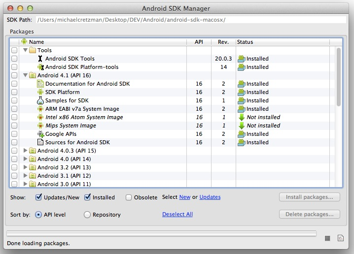
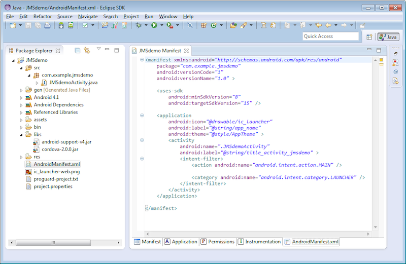
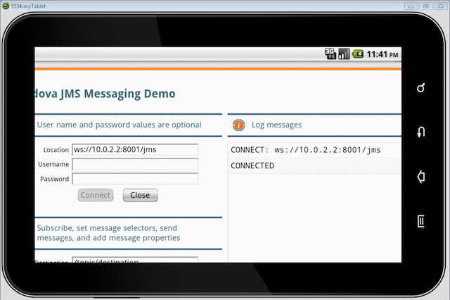

Walkthrough: Deploy a JavaScript JMS App as a Hybrid Android App
In this walkthrough, you will learn how to deploy an existing JavaScript JMS web app built with the Kaazing Gateway JavaScript JMS libraries as a hybrid app for Android. This topic walks you through the following subjects:
A hybrid Android app is a hybrid of a browser-based application and a native Android app. A native Android app is built using the Android SDK. A hybrid Android app is built using HTML, CSS, and JavaScript like a typical browser-based application, and then packaged in a framework that allows it to be converted into an app that runs on Android devices much like a native app. Hybrid Android apps enable web developers to leverage their web experience to create apps for Android. For information on native Android development, see the Android Develop.
A hybrid Android app is also different from a browser-based application that is intended for viewing in a browser on Android, but not downloaded through the Android app store. If you have an existing Kaazing Gateway JavaScript JMS browser-based application, you can use it to create a hybrid Android app or you can modify its web content to make it compatible with browsers on Android.
What You Will Accomplish
At the end of this walkthrough, a JavaScript JMS demo created using the Kaazing Gateway JavaScript JMS libraries runs as a hybrid Android app on Android, connects to the Apache ActiveMQ broker via the Gateway, and sends and receives JMS messages using a native or emulated WebSocket connection. Users can run the hybrid Android app on any Android device and connect via the Gateway to the Apache ActiveMQ broker.
This walkthrough uses the out of the box JavaScript JMS demo that ships with the Gateway as the example app, but the steps outlined in this walkthrough are the same for other JavaScript JMS client applications built with the Gateway.
Note: For this walkthrough, you can use any JMS-compliant message broker. By default, the Gateway is configured to connect to the server on tcp://localhost:61613. You can configure the connect URL in the file GATEWAY_HOME/conf/gateway-config.xml. See About Integrating Kaazing Gateway and JMS-Compliant Message Brokers for more information.
Before You Begin
Before starting this walkthrough you need the following:
PhoneGap 2.0 (PhoneGap is a distribution of Apache Cordova)
Learn about supported browsers, operating systems, and platform versions in Release Notes.
Note: Steps for installing and configuring Android SDK, ADT Plugin for Eclipse, and PhoneGap 2.0 are included in this walkthrough.
Install the Gateway, Android SDK, ADT Plugin and APIs for Eclipse, and PhoneGap 2.0
The following steps take you through the installation of the software required for deploying a hybrid Android app. If you have already have this software installed, you can simply note the locations of the installed software for later use with the shell script.
Once the ADT Plugin is installed, restart Eclipse.
In Eclipse, install the Android API 2.2 and 4.1.
Click Window, and then click Android SDK Manager.
Select the Android 2.2 and the Android 4.1 packages and then click Install packages.
Note: You might be prompted to install these packages automatically after you restarted Eclipse. Once the packages are installed, your Android SDK Manager should look like this:

Figure: Android SDK Manager with the required packages installed
Download PhoneGap 2.0 from http://phonegap.com/download and extract its contents. (PhoneGap 2.0 is also called Apache Cordova.)
Create a New Android Virtual Device in Eclipse
The following steps take you through the creation of a virtual device using the Android ADT plugin. This virtual device is the Android emulator that you will use to test your hybrid Android app.
In Eclipse, to create a new virtual device, click Window, and then click AVD Manager.
In AVD Manager, click New.
Enter a name for your new virtual device in Name (for example, myTablet).
In Target, select GALAXY Tab Addon.
In Built-in, select GALAXY Tab.
In Hardware, click New.
In Property, select Keyboard support and click OK.
In Hardware, set the value for the Keyboard support property to yes.
Click Create AVD.
In AVD Manager, select the new virtual device and click Start.
In Launch Options, click Launch.
The Android emulator launches. You can close the AVD Manager dialogs in Eclipse.
Close the Android emulator. It will launch automatically once you have built your hybrid Android app and run it from Eclipse.
Create a New Project in Eclipse for Android
The following steps take you through the process of creating the Eclipse project you will use to build your hybrid Android app.
Expand the Android folder, click Android Application Project, and click Next.
In Application Name, give your new project a name. This is the name that will appear when the app is listed in the Play Store and on the Android device.
Important: Note the location where the project is being created. You will need this location later when you run the shell script to set up PhoneGap.
Click Next.
Use the default settings for Launcher icon and click Next.
In Create Activity, select BlankActivity and click Next.
In New Blank Activity, in Activity Name, enter JMSdemoActivity and click Finish. If there are dependencies that you need to install, the Finish button is not available. Click Next, click Install/Upgrade, follow the installation wizard, and then click Finish.
Create and Populate the Project Directory for the Hybrid Android App
The following steps will create the project directory for the hybrid Android app, and populate the directory with the web app files and JavaScript JMS library files required to communicate with the Gateway. The Gateway includes a shell script to help you perform these steps.
Collect the following file locations for the shell script and define your project name.
CORDOVA_HOME/lib/android - A subfolder in the extracted PhoneGap directory. For example, C:\Users\Administrator\Desktop\phonegap-phonegap-2dbbdab\lib\android
GATEWAY_HOME - The folder where the Gateway and its components are located.
PROJECT_DIRECTORY - The directory where the Eclipse project you created is located.
Locate the shell script named android.sh (Mac and Linux) or android.bat (Windows) in the following location:
GATEWAY_HOME/demo/cordova/android.sh, or
GATEWAY_HOME\demo\cordova\android.bat
Open a shell or command prompt on the location of the android.sh or android.bat file and enter the following command (this is a Mac example):
The script copies the PhoneGap (Cordova) Android library, the Kaazing Gateway JavaScript JMS libraries, and the JavaScript JMS demo web files to the Eclipse project’s workspace and adds them to the necessary project subfolders.
Right-click your project in Eclipse and click Refresh.
Expand the assets subfolder in your Eclipse project and you will see a folder named www. This folder contains all of web files for the app (HTML, JavaScript, CSS), including the JavaScript JMS library files, and the PhoneGap (Cordova) Android library.
Verify that the cordova-2.0.0.jar file is located in the libs subfolder of your Eclipse project.
Right click on the libs subfolder, select Build Path, and then click Configure Build Path.
In the Java Build Path, click the Libraries tab, and click Add JARs.
In JAR Selection, expand the libs folder under JMSDemo, click cordova-2.0.0.jar in the libs subfolder of the project and click OK. Then click OK to close Java Build Path.
Expand the src subfolder of your Eclipse project and locate the main Java file for your project: JMSdemoActivity.java. Double-click the file to open it.
Replace contents of the file with the following:
package com.example.jmsdemo;
import android.os.Bundle;
import android.app.Activity;
import android.view.Menu;
import org.apache.cordova.*;
public class JMSdemoActivity extends DroidGap {
@Override
public void onCreate(Bundle savedInstanceState) {
super.onCreate(savedInstanceState);
// setContentView(R.layout.activity_jmsdemo);
super.loadUrl("file:///android_asset/www/index.html");
}
@Override
public boolean onCreateOptionsMenu(Menu menu) {
getMenuInflater().inflate(R.menu.activity_jmsdemo, menu);
return true;
}
}
Double-click AndroidManifest.xml in the Eclipse project explorer to view the XML contents (in Windows you might have to also click the AndroidManifest.xml tab to view the XML contents).

Figure: AndroidManifest.xml file's XML Contents
You are now going to paste XML into the file to add permissions and support device orientation changes.
Note: You are adding a list of permissions to your application. You should remove permissions you are not using before submitting your application to Google Play.
Paste the following highlighted contents of AndroidManifest.xml into your AndroidManifest.xml:
Note: This manifest uses our example name jmsdemo. You will want to change the instances of jmsdemo to your project name when you create your own projects.
Permissions are set with <uses-permission /> tags, and orientation is set inside the <activity> tag.
Save your project.
Note: This walkthrough uses the out of the box JavaScript JMS demo as an example web app, but when you create your own JavaScript JMS app, you can create it in your favorite IDE and then copy it to this www directory. You must name the HTML file for your app index.html and you must ensure that links in index.html point to the JavaScript WebSocket (by default, GATEWAY_HOME/lib/client/javascript) and JMS library (by default, GATEWAY_HOME/lib/client/javascript/jms) files and Cordova library are updated to reflect the new location:
Now that you've set up the project for your Android app, you can start Apache ActiveMQ and the Gateway. The following steps start the Apache ActiveMQ service that is included with the Gateway, configure the Gateway to work with the hybrid Android app, and then run the Gateway.
Start Apache ActiveMQ. For steps on starting Apache ActiveMQ, see the setup information for Apache ActiveMQ.
Open the GATEWAY_HOME/conf/gateway-config.xml file in a text editor. You need to modify this file to use the Android Emulator loopback IP address (10.0.2.2) and you need to change the cross site constraint to allow any origin in order to run the app locally. 10.0.2.2 is the special alias to your host loopback interface (127.0.0.1 on your development machine). For more information about Android Emulator networking, see Emulator Networking.
Modify the jms service to use the Android loopback IP address and the cross site constraint to allow any origin:
Invoke the gateway.start command by navigating to the GATEWAY_HOME/bin directory where you installed the Gateway and then enter the following to run the gateway.start script:
./gateway.start (Mac and Linux)
gateway.start.bat (Windows)
The output from the command will display that the Gateway is listening on:
ws://10.0.2.2:8001/jms @ localhost:8001
Build and Test the Hybrid Android App
The following steps build the hybrid Android app that you created in Eclipse.
Notes:
Both the Gateway and Apache ActiveMQ must be running before testing the hybrid Android app.
In order to connect the hybrid Android app on the Android device to the Gateway and Apache ActiveMQ, the Android device must be able to resolve the host name of computer running the Gateway on the network. This is the host name that you will use in the Location field of the hybrid Android app. For example, ws://host_name:8001/jms. You can also configure the Gateway to use the IP Address of the computer running the Gateway (for example, ws://192.168.4.86:8001/jms). Using the IP Address is often the easiest method during testing.
In Eclipse, right-click the project, select Run As, and then click Android Application.
The Android emulator launches.
Unlock Android.
The hybrid Android app is displayed.
Click in the Location field, and enter the jms service URI (ws://10.0.2.2:8001/jms), and click Connect.
The Log messages field reports a successful connection.

Figure: Hybrid Android app Connecting To Apache ActiveMQ via the Gateway
To test the hybrid Android app on an Android device, ensure USB debugging is enabled on your Android device (Settings > Applications > Development), and plug the device into your system.
In Eclipse, right-click the project, select Run As, and then click Android Application.
The hybrid Android app will deploy to your Android device.
In this walkthrough, you learned how to turn one of the out of the box Kaazing Gateway JavaScript JMS demos into a hybrid Android app. To learn how to build your own Kaazing Gateway JMS apps, refer to the documentation.
Notes
Clients built using Kaazing Gateway 3.x libraries will work against Kaazing Gateway 4.x. If you wish to upgrade your 3.x client to the 4.x libraries, please note that the 3.x clients used a single JMS library and 4.x clients include and use separate WebSocket and JMS libraries. Update your client library file and code references to include both the WebSocket and JMS libraries, as described in the 4.x documentation. For more migration information, see Migrate JavaScript Applications to Kaazing Gateway 4.x.